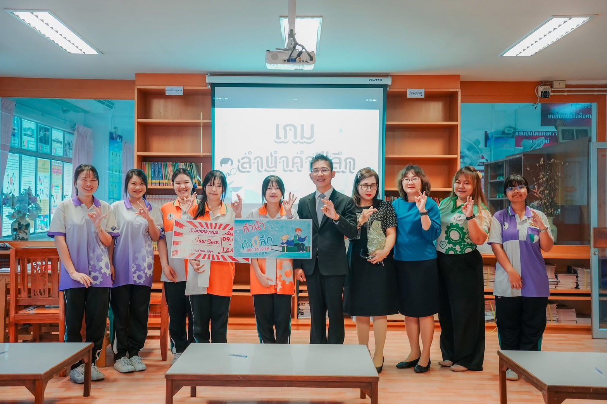

MY ACTIVITIES ♡
กิจกรรมที่ภูมิใจ ✿
ทุกกิจกรรมสอนให้แป้งได้ลองทำ ได้เจอเพื่อนใหม่ และเก็บความทรงจำดี ๆ ไว้เยอะเลยค่ะ
✦ CERTIFICATE & LIBRARY WEEK ✦
กิจกรรมสัปดาห์ห้องสมุด ♡
ได้ร่วมกิจกรรมกับคุณครูและเพื่อน ๆ ในห้องสมุด สนุกมากค่ะ แถมยังได้เกียรติบัตรเป็นกำลังใจเล็ก ๆ ให้ตั้งใจทำกิจกรรมต่อไปด้วย

✧ เป็นอีกกิจกรรมที่ทำให้รู้สึกว่าห้องสมุดไม่ได้น่าเบื่อเลยค่ะ ✧